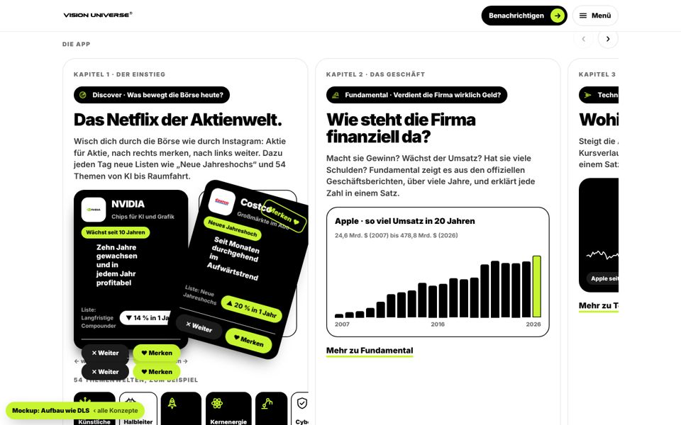

Konzepte · 19.11.2026 · nur Vorschau, nicht live
Gleiche Module. Weniger scrollen.
Zum Vergleich: unsere Seite im Aufbau von DLS und Rockstar
Beide Mockups bestehen nur aus den Bausteinen von www.visionuniverse.de in ihrem heutigen Design: Start mit iPhone, die zwölf Kapitel, News, Magazin, Report, Filme, Social, Fragen, Anmeldung. Keine neuen Farben, Bilder oder Filme. Anders ist nur, wie die Bausteine technisch angeordnet sind.

Mockup 1 · wie dls-consulting.deAufbau wie DLSOben rechts nur „Benachrichtigen“ und „Menü“, das Menü klappt als Karte auf. Darunter der Start wie heute. Dann Reihen zum Wischen mit Pfeilen: die zwölf Kapitel nebeneinander als Karten, die News mit Magazin und Report, die Filme. Mockup 2 · wie rockstargames.comAufbau wie Rockstar GamesMenüleiste wie heute. Oben eine Bühne, die von selbst durch Start und die zwölf Kapitel wechselt, unten rechts Pause und Punkte mit Fortschritt. Darunter die News wie Rockstars Newswire: großer Aufmacher links, Liste rechts, dann Magazin und Report. Die Filme als Raster.
Mockup 2 · wie rockstargames.comAufbau wie Rockstar GamesMenüleiste wie heute. Oben eine Bühne, die von selbst durch Start und die zwölf Kapitel wechselt, unten rechts Pause und Punkte mit Fortschritt. Darunter die News wie Rockstars Newswire: großer Aufmacher links, Liste rechts, dann Magazin und Report. Die Filme als Raster.
Zum Vergleich: live auf www.visionuniverse.de